Rotinas SEI
1. Incluir Medida Protetiva no SEI
- Abrir o arquivo da MPU
-
Checar as informações da MPU
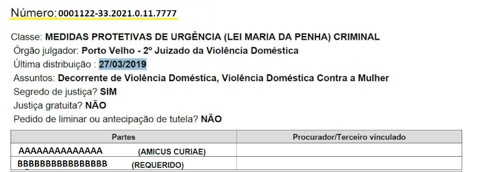
Realizar pesquisa no SEI para verificar se já existe processo cadastrado, buscando pelo:- Nº do Processo;
- Nome da requerente; ou
- Nome do requerido.
-
Checar se possui endereço e/ou contato telefônico
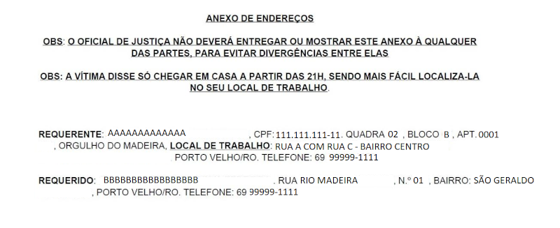
-
Iniciar Processo na aba PM-CASNUPEVIDPMP
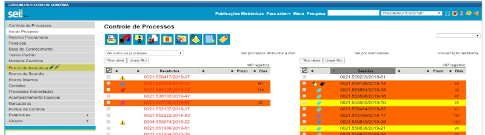
Escolha como tipo de documento: Comunicação Interna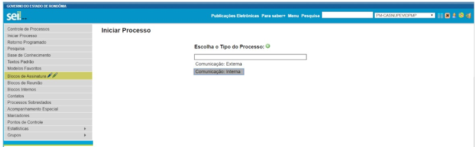
Especificações: colocar o nome da requerente
Nível de acesso: Restrito
Hipótese legal: Segredo de justiça processo penal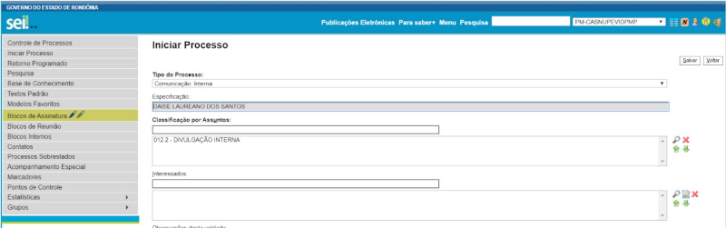
-
Inserir documento
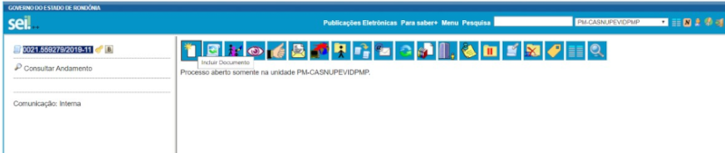
Escolher tipo de Documento: Externo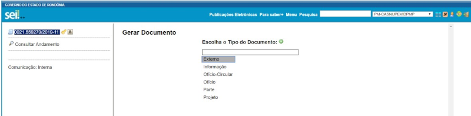
O tipo de documento pode ser: Decisão / Sentença / Informação / Boletim de Ocorrência, conforme constar na MPU.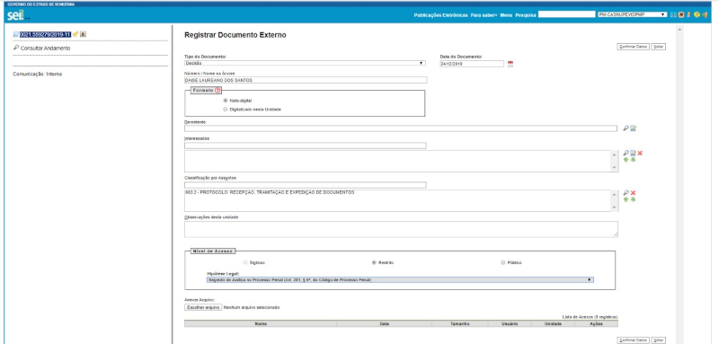
Demais campos a preencher:
Data atual · Formato nato digital · Nível de acesso: Restrito
Hipótese legal: Segredo de justiça processo penal
Anexar o arquivo · Confirmar dadosAtenção: sempre colocar antes do nome da requerente o Tipo de MPU:
PRORROGAÇÃO · 2ª PRORROGAÇÃO · NOVA MPU · ADVERTÊNCIA · EXTINÇÃO etc.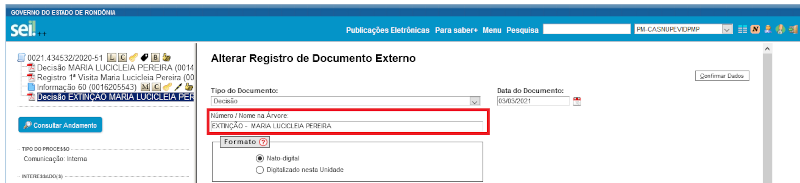
-
Gerenciar Marcador / Etiqueta
Selecionar a Etiqueta correspondente ao mês de lançamento
Data: colocar a data da MPU no formato com 4 dígitos no ano — ex.: 01/01/2021
Salvar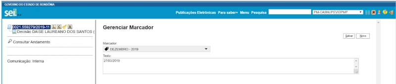
-
Incluir em bloco
Incluir o processo no mês correspondente.
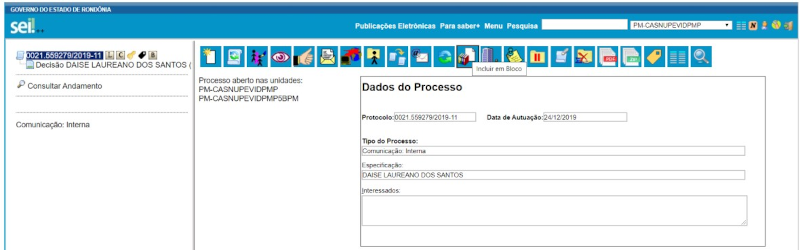
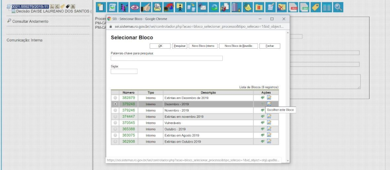
Enviar o processo e manter aberto na unidade PM-CASNUPEVIDPMP.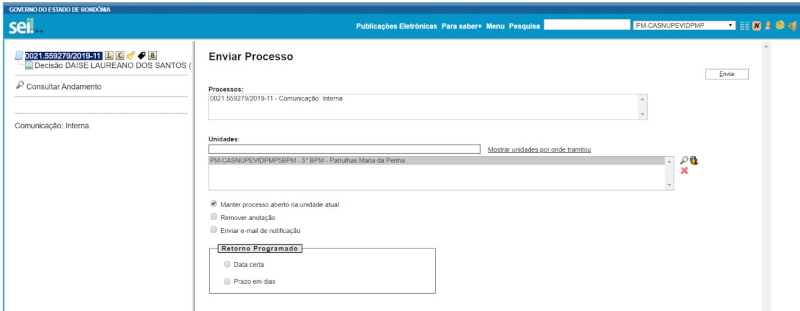
-
Acessar a unidade que o processo foi enviado
💡 De preferência, mantenha uma aba anônima aberta no navegador para trabalhar simultaneamente no SEI.
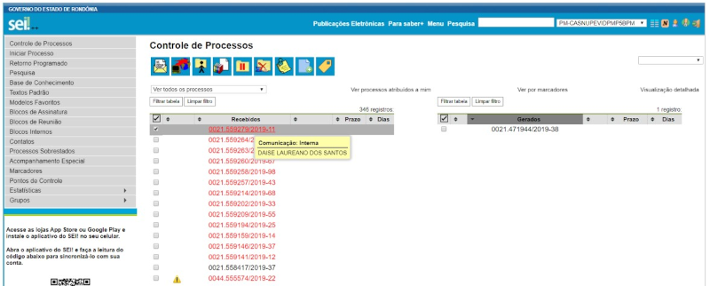
Acesse o processo e selecione Gerenciar Marcador, escolhendo uma das opções disponíveis.
Ex.:
MPU ATIVA / PENDENTE DE VISITA
Data: no formato com 4 dígitos no ano — ex.: 01/01/2021
Salvar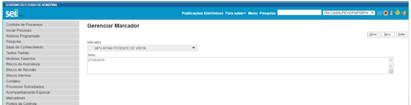
2. MPU envolvendo Policiais Militares
- Criar novo processo no SEI de Ofício – Documento Modelo (0017073781) para encaminhamento da MPU.
- Incluir em bloco de assinatura para que a Chefe do NUPEVID assine.
- Após a assinatura, enviar o processo para a Corregedoria e para o Batalhão do Militar.
- Registrar para controle na planilha "Ocorrências com Militares" no Drive do NUPEVID (pasta CEMMPU).
3. Mandados de Prisão
- Criar novo processo no SEI de Ofício – Documento Modelo (0017294116) para encaminhamento do Mandado ao Batalhão.
- Incluir em bloco de assinatura para que o Chefe do NUPEVID assine.
- Após a assinatura, enviar o processo para o Batalhão da área correspondente.